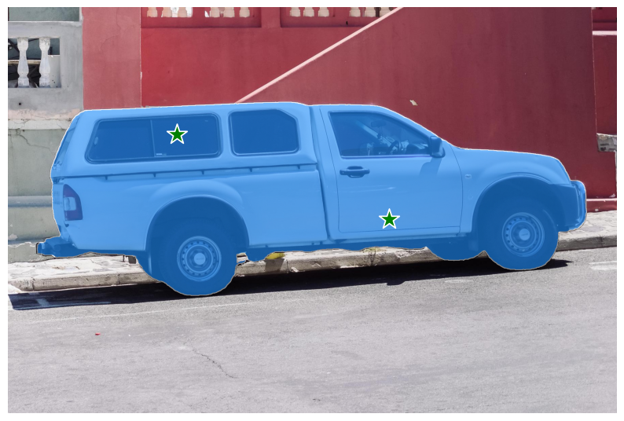

# Copyright (c) Meta Platforms, Inc. and affiliates.Object masks in images from prompts with SAM 2
Segment Anything Model 2 (SAM 2) predicts object masks given prompts that indicate the desired object. The model first converts the image into an image embedding that allows high quality masks to be efficiently produced from a prompt.
The SAM2ImagePredictor class provides an easy interface to the model for prompting the model. It allows the user to first set an image using the set_image method, which calculates the necessary image embeddings. Then, prompts can be provided via the predict method to efficiently predict masks from those prompts. The model can take as input both point and box prompts, as well as masks from the previous iteration of prediction.

Environment Set-up
If running locally using jupyter, first install segment-anything-2 in your environment using the installation instructions in the repository.
If running from Google Colab, set using_colab=True below and run the cell. In Colab, be sure to select ‘GPU’ under ‘Edit’->‘Notebook Settings’->‘Hardware accelerator’. Note that it’s recommended to use A100 or L4 GPUs when running in Colab (T4 GPUs might also work, but could be slow and might run out of memory in some cases).
using_colab = Falseif using_colab:
import torch
import torchvision
print("PyTorch version:", torch.__version__)
print("Torchvision version:", torchvision.__version__)
print("CUDA is available:", torch.cuda.is_available())
import sys
!{sys.executable} -m pip install opencv-python matplotlib
!{sys.executable} -m pip install 'git+https://github.com/facebookresearch/segment-anything-2.git'
!mkdir -p images
!wget -P images https://raw.githubusercontent.com/facebookresearch/segment-anything-2/main/notebooks/images/truck.jpg
!wget -P images https://raw.githubusercontent.com/facebookresearch/segment-anything-2/main/notebooks/images/groceries.jpg
!mkdir -p ../checkpoints/
!wget -P ../checkpoints/ https://dl.fbaipublicfiles.com/segment_anything_2/072824/sam2_hiera_large.ptSet-up
Necessary imports and helper functions for displaying points, boxes, and masks.
import os
# if using Apple MPS, fall back to CPU for unsupported ops
os.environ["PYTORCH_ENABLE_MPS_FALLBACK"] = "1"
import numpy as np
import torch
import matplotlib.pyplot as plt
from PIL import Image# select the device for computation
if torch.cuda.is_available():
device = torch.device("cuda")
elif torch.backends.mps.is_available():
device = torch.device("mps")
else:
device = torch.device("cpu")
print(f"using device: {device}")
if device.type == "cuda":
# use bfloat16 for the entire notebook
torch.autocast("cuda", dtype=torch.bfloat16).__enter__()
# turn on tfloat32 for Ampere GPUs (https://pytorch.org/docs/stable/notes/cuda.html#tensorfloat-32-tf32-on-ampere-devices)
if torch.cuda.get_device_properties(0).major >= 8:
torch.backends.cuda.matmul.allow_tf32 = True
torch.backends.cudnn.allow_tf32 = True
elif device.type == "mps":
print(
"\nSupport for MPS devices is preliminary. SAM 2 is trained with CUDA and might "
"give numerically different outputs and sometimes degraded performance on MPS. "
"See e.g. https://github.com/pytorch/pytorch/issues/84936 for a discussion."
)using device: cudanp.random.seed(3)
def show_mask(mask, ax, random_color=False, borders = True):
if random_color:
color = np.concatenate([np.random.random(3), np.array([0.6])], axis=0)
else:
color = np.array([30/255, 144/255, 255/255, 0.6])
h, w = mask.shape[-2:]
mask = mask.astype(np.uint8)
mask_image = mask.reshape(h, w, 1) * color.reshape(1, 1, -1)
if borders:
import cv2
contours, _ = cv2.findContours(mask,cv2.RETR_EXTERNAL, cv2.CHAIN_APPROX_NONE)
# Try to smooth contours
contours = [cv2.approxPolyDP(contour, epsilon=0.01, closed=True) for contour in contours]
mask_image = cv2.drawContours(mask_image, contours, -1, (1, 1, 1, 0.5), thickness=2)
ax.imshow(mask_image)
def show_points(coords, labels, ax, marker_size=375):
pos_points = coords[labels==1]
neg_points = coords[labels==0]
ax.scatter(pos_points[:, 0], pos_points[:, 1], color='green', marker='*', s=marker_size, edgecolor='white', linewidth=1.25)
ax.scatter(neg_points[:, 0], neg_points[:, 1], color='red', marker='*', s=marker_size, edgecolor='white', linewidth=1.25)
def show_box(box, ax):
x0, y0 = box[0], box[1]
w, h = box[2] - box[0], box[3] - box[1]
ax.add_patch(plt.Rectangle((x0, y0), w, h, edgecolor='green', facecolor=(0, 0, 0, 0), lw=2))
def show_masks(image, masks, scores, point_coords=None, box_coords=None, input_labels=None, borders=True):
for i, (mask, score) in enumerate(zip(masks, scores)):
plt.figure(figsize=(10, 10))
plt.imshow(image)
show_mask(mask, plt.gca(), borders=borders)
if point_coords is not None:
assert input_labels is not None
show_points(point_coords, input_labels, plt.gca())
if box_coords is not None:
# boxes
show_box(box_coords, plt.gca())
if len(scores) > 1:
plt.title(f"Mask {i+1}, Score: {score:.3f}", fontsize=18)
plt.axis('off')
plt.show()Example image
image = Image.open('images/truck.jpg')
image = np.array(image.convert("RGB"))plt.figure(figsize=(10, 10))
plt.imshow(image)
plt.axis('on')
plt.show()Selecting objects with SAM 2
First, load the SAM 2 model and predictor. Change the path below to point to the SAM 2 checkpoint. Running on CUDA and using the default model are recommended for best results.
from sam2.build_sam import build_sam2
from sam2.sam2_image_predictor import SAM2ImagePredictor
sam2_checkpoint = "../checkpoints/sam2_hiera_large.pt"
model_cfg = "sam2_hiera_l.yaml"
sam2_model = build_sam2(model_cfg, sam2_checkpoint, device=device)
predictor = SAM2ImagePredictor(sam2_model)Process the image to produce an image embedding by calling SAM2ImagePredictor.set_image. SAM2ImagePredictor remembers this embedding and will use it for subsequent mask prediction.
predictor.set_image(image)To select the truck, choose a point on it. Points are input to the model in (x,y) format and come with labels 1 (foreground point) or 0 (background point). Multiple points can be input; here we use only one. The chosen point will be shown as a star on the image.
input_point = np.array([[500, 375]])
input_label = np.array([1])plt.figure(figsize=(10, 10))
plt.imshow(image)
show_points(input_point, input_label, plt.gca())
plt.axis('on')
plt.show() print(predictor._features["image_embed"].shape, predictor._features["image_embed"][-1].shape)torch.Size([1, 256, 64, 64]) torch.Size([256, 64, 64])Predict with SAM2ImagePredictor.predict. The model returns masks, quality predictions for those masks, and low resolution mask logits that can be passed to the next iteration of prediction.
masks, scores, logits = predictor.predict(
point_coords=input_point,
point_labels=input_label,
multimask_output=True,
)
sorted_ind = np.argsort(scores)[::-1]
masks = masks[sorted_ind]
scores = scores[sorted_ind]
logits = logits[sorted_ind]With multimask_output=True (the default setting), SAM 2 outputs 3 masks, where scores gives the model’s own estimation of the quality of these masks. This setting is intended for ambiguous input prompts, and helps the model disambiguate different objects consistent with the prompt. When False, it will return a single mask. For ambiguous prompts such as a single point, it is recommended to use multimask_output=True even if only a single mask is desired; the best single mask can be chosen by picking the one with the highest score returned in scores. This will often result in a better mask.
masks.shape # (number_of_masks) x H x W(3, 1200, 1800)show_masks(image, masks, scores, point_coords=input_point, input_labels=input_label, borders=True)Specifying a specific object with additional points
The single input point is ambiguous, and the model has returned multiple objects consistent with it. To obtain a single object, multiple points can be provided. If available, a mask from a previous iteration can also be supplied to the model to aid in prediction. When specifying a single object with multiple prompts, a single mask can be requested by setting multimask_output=False.
input_point = np.array([[500, 375], [1125, 625]])
input_label = np.array([1, 1])
mask_input = logits[np.argmax(scores), :, :] # Choose the model's best maskmasks, scores, _ = predictor.predict(
point_coords=input_point,
point_labels=input_label,
mask_input=mask_input[None, :, :],
multimask_output=False,
)masks.shape(1, 1200, 1800)show_masks(image, masks, scores, point_coords=input_point, input_labels=input_label)
To exclude the car and specify just the window, a background point (with label 0, here shown in red) can be supplied.
input_point = np.array([[500, 375], [1125, 625]])
input_label = np.array([1, 0])
mask_input = logits[np.argmax(scores), :, :] # Choose the model's best maskmasks, scores, _ = predictor.predict(
point_coords=input_point,
point_labels=input_label,
mask_input=mask_input[None, :, :],
multimask_output=False,
)show_masks(image, masks, scores, point_coords=input_point, input_labels=input_label)Specifying a specific object with a box
The model can also take a box as input, provided in xyxy format.
input_box = np.array([425, 600, 700, 875])masks, scores, _ = predictor.predict(
point_coords=None,
point_labels=None,
box=input_box[None, :],
multimask_output=False,
)show_masks(image, masks, scores, box_coords=input_box)
Combining points and boxes
Points and boxes may be combined, just by including both types of prompts to the predictor. Here this can be used to select just the trucks’s tire, instead of the entire wheel.
input_box = np.array([425, 600, 700, 875])
input_point = np.array([[575, 750]])
input_label = np.array([0])masks, scores, logits = predictor.predict(
point_coords=input_point,
point_labels=input_label,
box=input_box,
multimask_output=False,
)show_masks(image, masks, scores, box_coords=input_box, point_coords=input_point, input_labels=input_label)Batched prompt inputs
SAM2ImagePredictor can take multiple input prompts for the same image, using predict method. For example, imagine we have several box outputs from an object detector.
input_boxes = np.array([
[75, 275, 1725, 850],
[425, 600, 700, 875],
[1375, 550, 1650, 800],
[1240, 675, 1400, 750],
])masks, scores, _ = predictor.predict(
point_coords=None,
point_labels=None,
box=input_boxes,
multimask_output=False,
)masks.shape # (batch_size) x (num_predicted_masks_per_input) x H x W(4, 1, 1200, 1800)plt.figure(figsize=(10, 10))
plt.imshow(image)
for mask in masks:
show_mask(mask.squeeze(0), plt.gca(), random_color=True)
for box in input_boxes:
show_box(box, plt.gca())
plt.axis('off')
plt.show()End-to-end batched inference
If all prompts are available in advance, it is possible to run SAM 2 directly in an end-to-end fashion. This also allows batching over images.
image1 = image # truck.jpg from above
image1_boxes = np.array([
[75, 275, 1725, 850],
[425, 600, 700, 875],
[1375, 550, 1650, 800],
[1240, 675, 1400, 750],
])
image2 = Image.open('images/groceries.jpg')
image2 = np.array(image2.convert("RGB"))
image2_boxes = np.array([
[450, 170, 520, 350],
[350, 190, 450, 350],
[500, 170, 580, 350],
[580, 170, 640, 350],
])
img_batch = [image1, image2]
boxes_batch = [image1_boxes, image2_boxes]predictor.set_image_batch(img_batch)masks_batch, scores_batch, _ = predictor.predict_batch(
None,
None,
box_batch=boxes_batch,
multimask_output=False
)for image, boxes, masks in zip(img_batch, boxes_batch, masks_batch):
plt.figure(figsize=(10, 10))
plt.imshow(image)
for mask in masks:
show_mask(mask.squeeze(0), plt.gca(), random_color=True)
for box in boxes:
show_box(box, plt.gca())Similarly, we can have a batch of point prompts defined over a batch of images
image1 = image # truck.jpg from above
image1_pts = np.array([
[[500, 375]],
[[650, 750]]
]) # Bx1x2 where B corresponds to number of objects
image1_labels = np.array([[1], [1]])
image2_pts = np.array([
[[400, 300]],
[[630, 300]],
])
image2_labels = np.array([[1], [1]])
pts_batch = [image1_pts, image2_pts]
labels_batch = [image1_labels, image2_labels]masks_batch, scores_batch, _ = predictor.predict_batch(pts_batch, labels_batch, box_batch=None, multimask_output=True)
# Select the best single mask per object
best_masks = []
for masks, scores in zip(masks_batch,scores_batch):
best_masks.append(masks[range(len(masks)), np.argmax(scores, axis=-1)])for image, points, labels, masks in zip(img_batch, pts_batch, labels_batch, best_masks):
plt.figure(figsize=(10, 10))
plt.imshow(image)
for mask in masks:
show_mask(mask, plt.gca(), random_color=True)
show_points(points, labels, plt.gca())